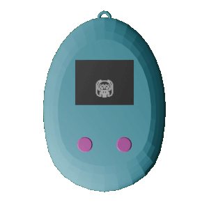
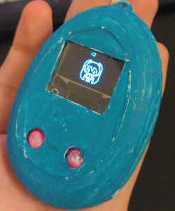
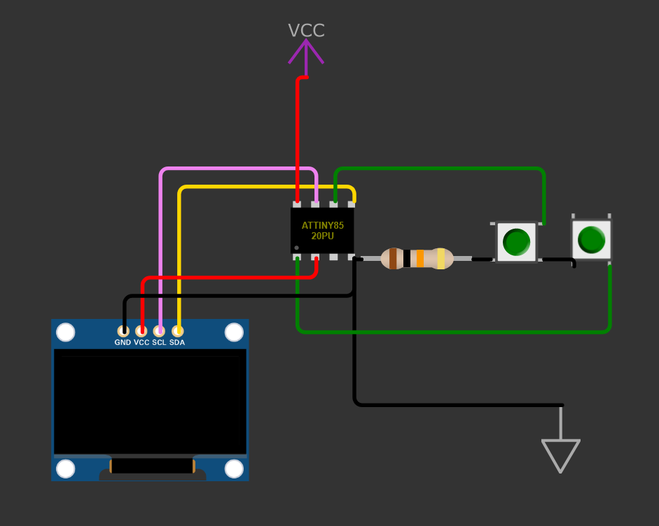

This was just a quick and simple project I did for fun! It's a small virtual pet, that you can take around with you in your day-to-day and play with.


Left: The 3D model of the device, Right: The device after ~1 Year of use.
The Tamagotchi software runs on an ATTiny85 chip, and is powered by a rechargable Lithium Ion battery. The battery is a little bit oversized so the battery life is in range of years, if the device isn't turned on often.

The wiring diagram for the Tamagotchi
One change I will make in future versions is to replace the OLED with an LCD, as this can be on for long periods without the pixels decaying. A small LED could also be added as a backlight.